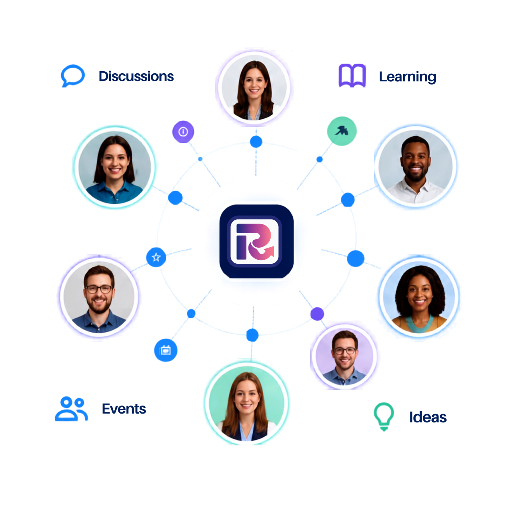
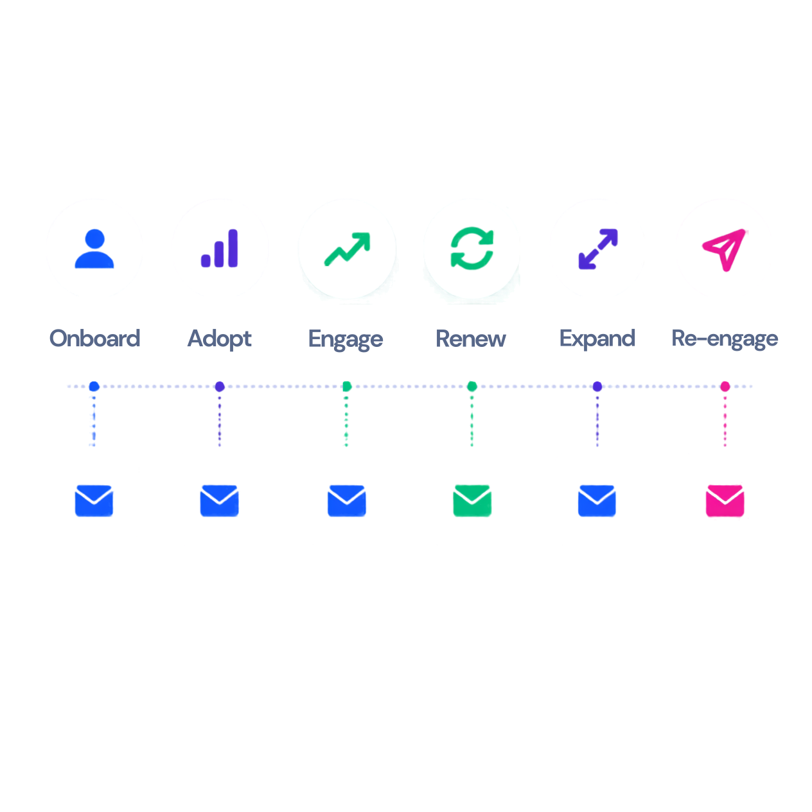
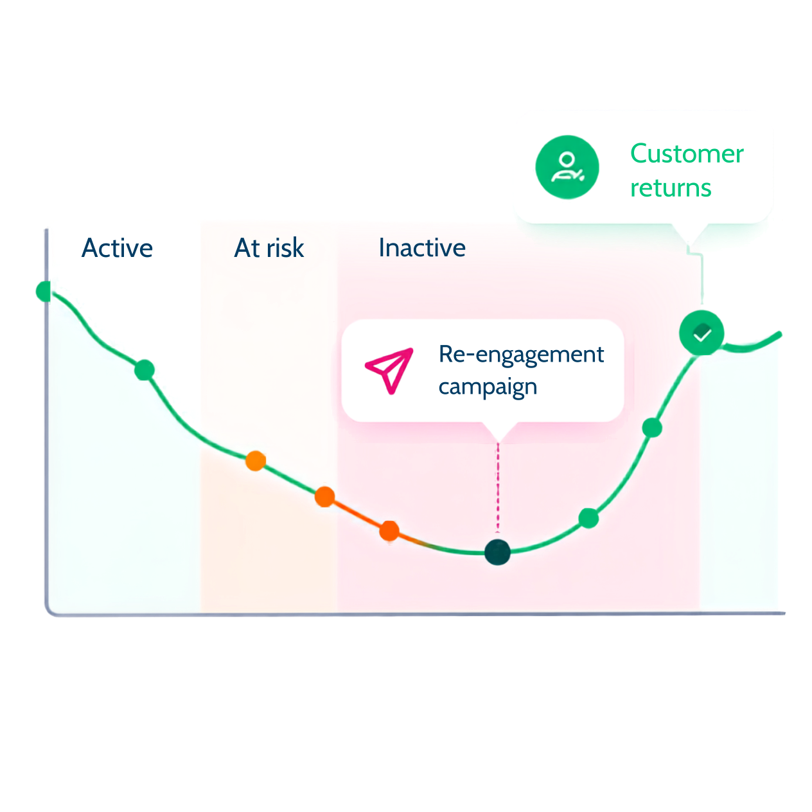
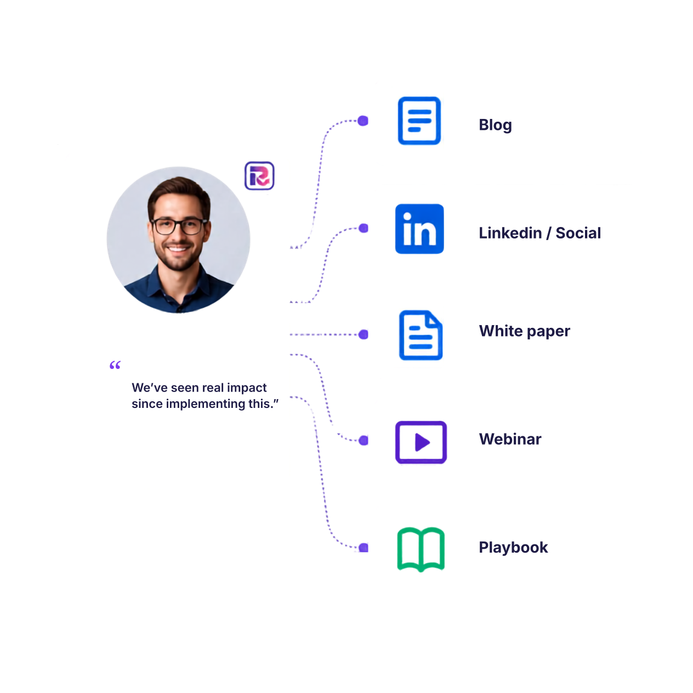

Community
Build an active customer community where customers connect with peers, learn from each other, share product experiences and find more reasons to engage with your brand.
It creates an always-on customer touchpoint that strengthens engagement, builds belonging and gives your team a natural environment to surface advocates, insight and new opportunities.

Champion Programmes
Turn your strongest customers into active advocates who participate in reference calls, reviews, customer stories, peer-to-peer conversations and referral programmes.
It creates a repeatable advocacy engine that brings trusted customer voices into sales and marketing while giving your best customers a stronger role in your brand.

Webinars
Build customer-led education through webinars, expert sessions, certifications and product learning aligned to the use cases your customers need to discover and develop.
It accelerates product adoption and creates meaningful, recurring engagement — bringing customers into the programme as contributors, speakers and voices of experience, not just attendees.

User Groups & Events
Create regional, role-based and domain-led customer groups and events that bring people together around shared challenges, use cases and experiences.
It deepens customer relationships, encourages peer connection and creates natural moments to identify advocates, generate reference calls and build stronger customer networks within key regions and domains.

Customer Stories / Case Studies
Turn successful customer experiences into shorter, sharper proof points — case studies, social posts, sales-ready stories and shareable customer moments.
It gives sales and marketing credible customer proof that can travel across the funnel and helps prospects see a real customer outcome, not just a product claim.

Lifecycle Email Nurture
Use lifecycle email programmes to keep customers moving through the moments that matter — from onboarding and adoption to renewal, expansion and re-engagement.
It keeps customers engaged with the right message at the right moment and helps reduce disengagement before it becomes a feature-adoption, renewal or churn problem.

Win-back & Re-engagement
Use customer signals to identify disengagement early and create relevant reasons to return — before inactivity becomes a renewal or churn problem.
It reactivates customer engagement and gives teams earlier opportunities to intervene with at-risk relationships before they become harder to recover.

In-Product Guides
Give customers contextual guidance inside the product to help them discover important features, complete key actions and uncover the next useful capability.
It shortens the path to value and creates more opportunities for customers to adopt the capabilities they already own.

Customer-led Content
Work with customers to turn their experience into long-form content — practitioner blogs, playbooks, white papers and other perspectives that put real customer expertise in front of your audience.
It brings credible customer voices into your brand, builds authority and gives customers valuable platforms to share their experience and expertise.